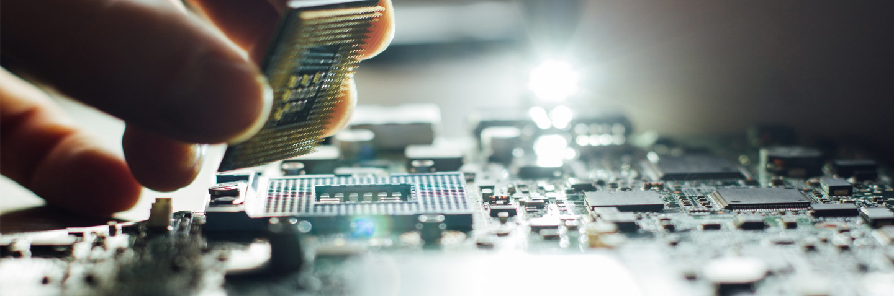
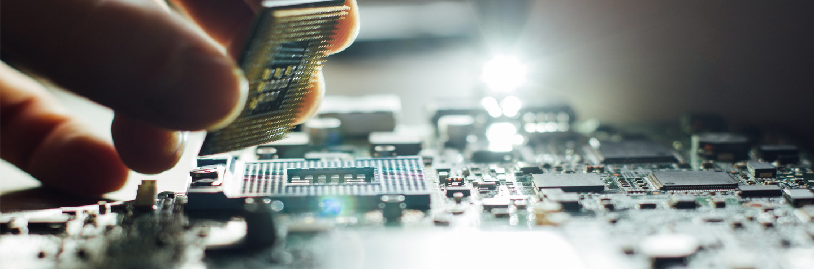

(Haberin tamamını görmek için başlığa tıklayın).
RTX 3090’ın Kalbindeki GA102 GPU Nasıl Görünüyor?Daha önce AMD’nin Ryzen 5 5600X işlemcisi parçalanmıştı ve Zen 3 mimarisinin nasıl göründüğüne bakmıştık.
Reddit tarafından TikTok rakiplerinden birisi olan Dubsmash satın alınmış durumda.
Microsoft Defender Araştırma Ekibi, kötü niyetli kişilerin reklam geliri yaratması için popüler web tarayıcılarını hedefleyen bazı kötü amaçlı yazılımlar belirledi.
Avrupa Birliği, yonga ithalatını azaltmak ve yarı iletken sektörünü güçlendirmek amacıyla büyük bütçeler ayırmayı planlıyor.
Debian 10.7 sürümü güvenlik ve sorun odaklı yamalar içeriyor.
Computex 2021 Etkinliği Haziranda Yüz Yüze Düzenlenecek
RTX: Game On Etkinliği 12 Ocakta: Yeni NVIDIA Kartlar Gelebilir
36 Çekirdekli Intel Xeon Sunucu İşlemcisi Ortaya Çıktı
Facebook, Libra Kripto Para Birimini Yakında Piyasaya Sürebilir
Starlink Uydudan İnternet Hizmetinde 100 Mbps Hızları Görüldü
Microsoft, Bethesda’yı Satın Aldı
ASUS, NVIDIA DPU ve EGX Altyapılı GPU Sunucularını Duyurdu
Nintendo Satışları Pandemi Döneminde Yüzde 400 Arttı